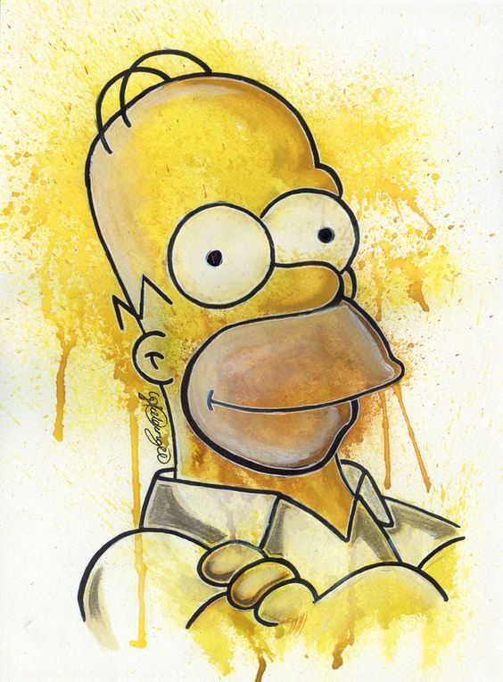
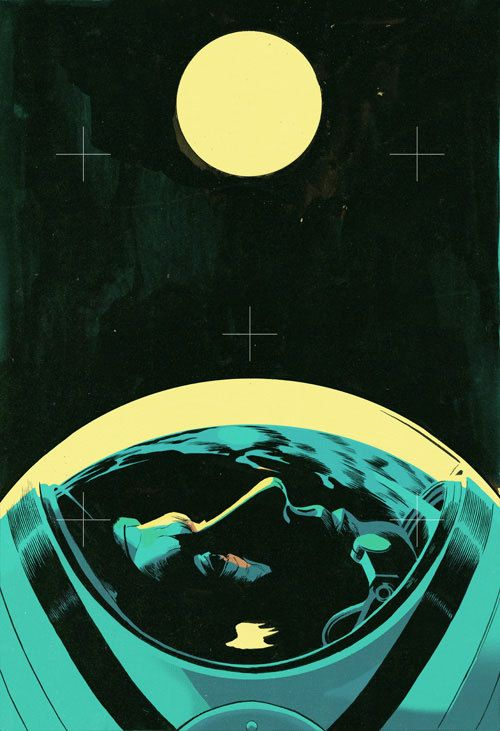
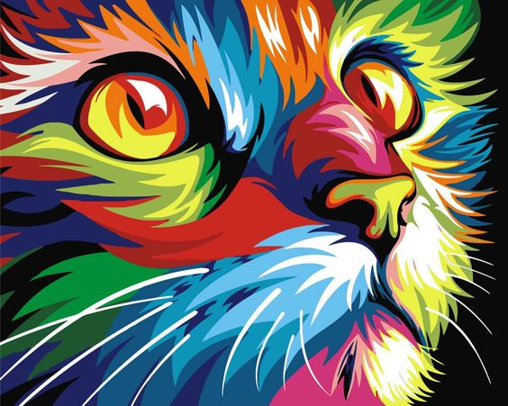

Сервіси для Власника в системі animal id.info
Online кабінет власника
Мобільний додаток
Профілі тварин
Карта організацій, зареєстрованих в animal id
Обмін даними з світовими базами даних
Послуги для тварин
Можливість надавати послуги іншим тваринам
- Платформа для комунікації з організаціями та власниками тварин
- Додавання нових тварин
- Редагування профілю (при зміні адреси чи телефону проживання)
- Можливість відкриття особистих даних публічно.
Зареєструвати тварину



Animal-id.info
Міжнародна онлайн платформа, яка об’єднує дані
про ідентифікованих тварин, їх власників та організації,
які працюють з тваринами. Система генерує великі дані
і надає можливість муніципалітетам та іншим організаціям працювати з ними. Дізнатись більше
Для чого ми це робимо
Місія організації - підняти комфорт співіснування людей та тварин
у світі на новий, більш якісний, рівень.
Мета animal id - об’єднати дані про всіх тварин світу на одному ресурсі.
Мета animal id - об’єднати дані про всіх тварин світу на одному ресурсі.